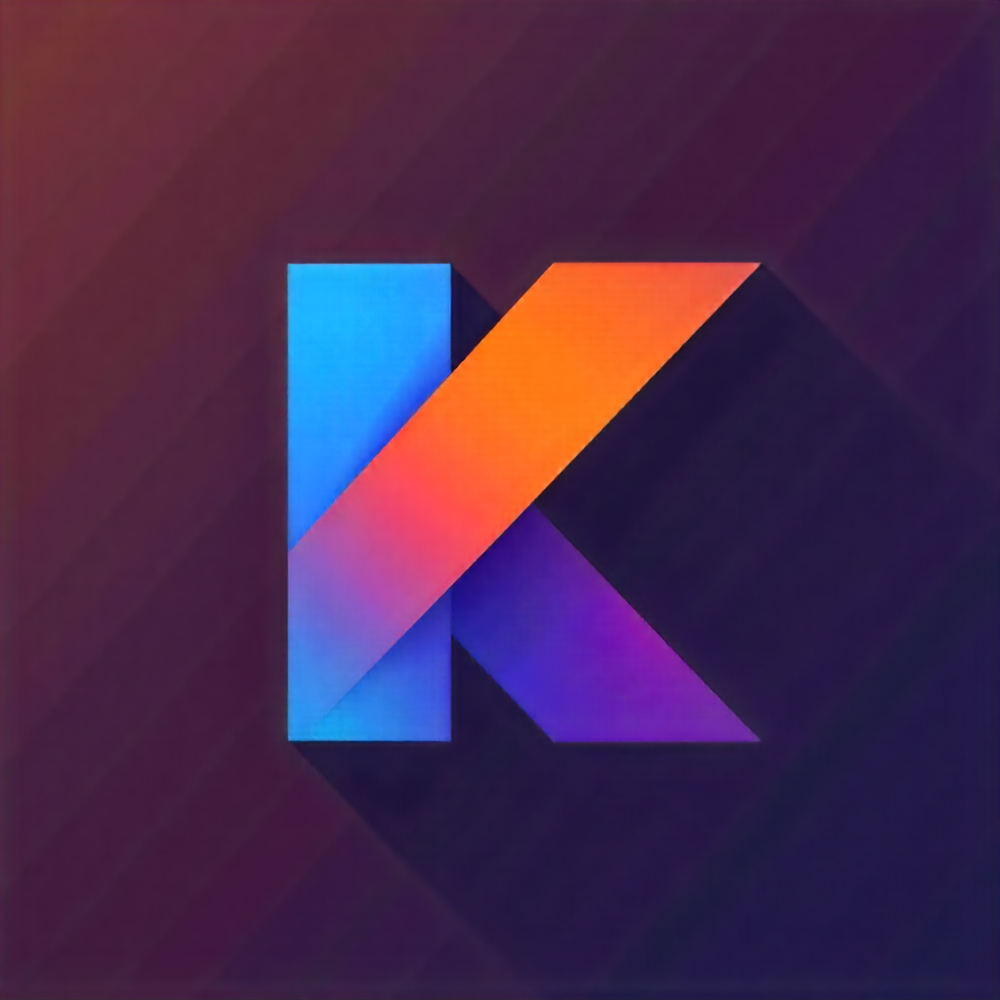

Mes compétences
 HTML5
HTML5
 CSS3
CSS3
 JavaScript
JavaScript
 Python
Python
 PHP
PHP
.png) Angular
Angular

Kotlin
Je m’appelle Josue Kialengela-Tazi, étudiant en 2ᵉ année de BTS SIO, option SLAM (Solutions Logicielles et Applications Métiers).
Passionné par le développement web et mobile, j’aime concevoir des sites et applications intuitives, performantes et adaptées aux besoins réels des utilisateurs.
Je maîtrise plusieurs langages de programmation, dont HTML, CSS, JavaScript, PHP, Python, Kotlin, SQL et Java. Curieux, rigoureux et déterminé, je suis toujours motivé à relever de nouveaux défis techniques et à apprendre de nouvelles technologies.
Actuellement, je suis à la recherche d’un stage obligatoire non rémunéré dans le cadre de ma formation, d’une durée de 8 semaines, prévu du 5 juin au 27 février 2026.
Je prévois de poursuivre mes études en troisième année en alternance dans le développement full stack ou front-end. Je suis donc également en recherche active d’une entreprise pour m’accompagner dans cette alternance à partir de la rentrée prochaine.
HTML5
CSS3
JavaScript
Python
PHP
Angular